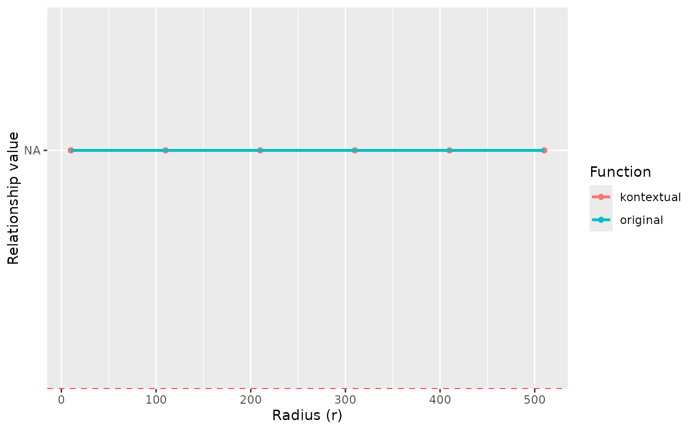

Plotting the original and kontextual L values over a range of radii.
Source:R/rsCurve.R
kontextPlot.RdThis function takes outputs from rsCurve and plots them in ggplot. If standard deviation is estimated in rsCurve, then confidence intervals will be constructed based on the standard deviation. If the confidence interval overlaps with 0, then the relationship is insignificant for that radius.
Arguments
- rsDf
A data frame from
kontextCurve.
Examples
data("kerenSCE")
kerenImage6 <- kerenSCE[, kerenSCE$imageID == "6"]
rsDf <- kontextCurve(
cells = kerenImage6,
from = "p53",
to = "Immune",
parent = c("p53", "Keratin+Tumour"),
rs = seq(10, 510, 100),
cores = 2
)
kontextPlot(rsDf)
#> Ignoring unknown labels:
#> • fill : "Function"
